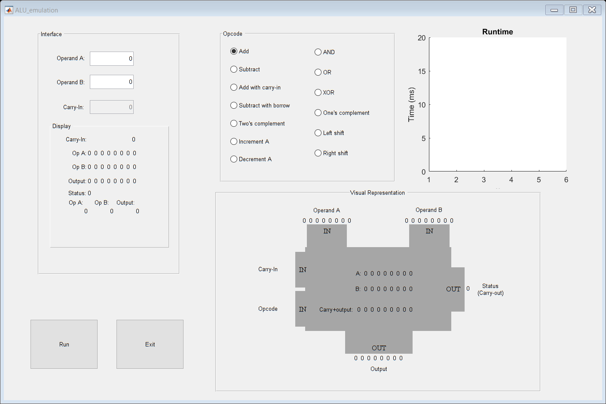

function varargout = ALU_emulation(varargin) % ALU_EMULATION MATLAB code for ALU_emulation.fig % ALU_EMULATION, by itself, creates a new ALU_EMULATION or raises the existing % singleton*. % % H = ALU_EMULATION returns the handle to a new ALU_EMULATION or the handle to % the existing singleton*. % % ALU_EMULATION('CALLBACK',hObject,eventData,handles,...) calls the local % function named CALLBACK in ALU_EMULATION.M with the given input arguments. % % ALU_EMULATION('Property','Value',...) creates a new ALU_EMULATION or raises the % existing singleton*. Starting from the left, property value pairs are % applied to the APPALU before ALU_emulation_OpeningFcn gets called. An % unrecognized property name or invalid value makes property application % stop. All inputs are passed to ALU_emulation_OpeningFcn via varargin. % % *See APPALU Options on GUIDE's Tools menu. Choose "APPALU allows only one % instance to run (singleton)". % % See also: GUIDE, GUIDATA, GUIHANDLES % Edit the above text to modify the response to help ALU_emulation % Last Modified by GUIDE v2.5 09-May-2017 07:48:40 % Begin initialization code - DO NOT EDIT gui_Singleton = 1; gui_State = struct('gui_Name', mfilename, ... 'gui_Singleton', gui_Singleton, ... 'gui_OpeningFcn', @ALU_emulation_OpeningFcn, ... 'gui_OutputFcn', @ALU_emulation_OutputFcn, ... 'gui_LayoutFcn', [] , ... 'gui_Callback', []); if nargin && ischar(varargin{1}) gui_State.gui_Callback = str2func(varargin{1}); end if nargout [varargout{1:nargout}] = gui_mainfcn(gui_State, varargin{:}); else gui_mainfcn(gui_State, varargin{:}); end % End initialization code - DO NOT EDIT % --- Executes just before ALU_emulation is made visible. function ALU_emulation_OpeningFcn(hObject, eventdata, handles, varargin) % This function has no output args, see OutputFcn. % hObject handle to figure % eventdata reserved - to be defined in a future version of MATLAB % handles structure with handles and user data (see GUIDATA) % varargin command line arguments to ALU_emulation (see VARARGIN) % Choose default command line output for ALU_emulation handles.output = hObject; % Update handles structure guidata(hObject, handles); % UIWAIT makes ALU_emulation wait for user response (see UIRESUME) % uiwait(handles.appalu); % --- Outputs from this function are returned to the command line. function varargout = ALU_emulation_OutputFcn(hObject, eventdata, handles) % varargout cell array for returning output args (see VARARGOUT); % hObject handle to figure % eventdata reserved - to be defined in a future version of MATLAB % handles structure with handles and user data (see GUIDATA) % Get default command line output from handles structure varargout{1} = handles.output; % --- Executes on button press in buttonExit. function buttonExit_Callback(hObject, eventdata, handles) % hObject handle to buttonExit (see GCBO) % eventdata reserved - to be defined in a future version of MATLAB % handles structure with handles and user data (see GUIDATA) %this line deletes the shell of the program, which causes the program to %close delete(handles.appalu) % --- Executes on button press in buttonRun. function buttonRun_Callback(hObject, eventdata, handles) % hObject handle to buttonRun (see GCBO) % eventdata reserved - to be defined in a future version of MATLAB % handles structure with handles and user data (see GUIDATA) axes(handles.axes1); cla; tic; timev(1) = toc; %by default the output will not be in twos complement format, so we want %the text box that displays that the output is in twos complement notation %to invisible set(handles.twoscomptextbox,'Visible','off'); set(handles.checkConvert,'Visible','off'); %these if statements check if either of the input operands are blank, and %if they are puts a 0 in them so the program does not throw any errors if get(handles.operandA,'String') == "" set(handles.operandA,'String','0'); end if get(handles.operandB,'String') == "" set(handles.operandB,'String','0'); end if get(handles.carryinput,'String') == "" set(handles.carryinput,'String','0'); end timev(2) = toc; %these lines convert the values in the input boxes from string to unsigned %8 bit integer values opA = str2num(get(handles.operandA,'String')); cast(opA,'uint8'); opB = str2num(get(handles.operandB,'String')); %#ok<*ST2NM> cast(opB,'uint8'); %the #ok<*ST2NM> is included to prevent str2num from showing a warning %these lines make sure the ALU only takes in the first eight bits of data %passed to it in each operand input, as would happen in a real ALU opA = mod(opA,256); opB = mod(opB,256); %these two set() statements are what display the inputs as decimal numbers %in the Display container. set(handles.textDecimalA,'String',opA) set(handles.textDecimalB,'String',opB) timev(3) = toc; %these lines convert each operand to the binary 8 bit equivalent of the %integers that were input in the operandA and operandB text boxes. de2bi() %was used here instead of creating our own function because in creating our %own function that would utilize dividing the number by 2^n in an iterative %statement, we encountered the issue that because Matlab is such a high %level program, it "smartly" deals with dividing two integer values by %assigning the value that they are equal to to be a float type, so we were %getting back decimals. Even using a function that returned the value of %the two as an integer still rounded up if the decimal was greater than .5. %Because of these, and since our project was not to create a decimal to %binary converter, we utilizes one of the functions that was available to %us through the Matlab library. opA = de2bi(opA,8,'left-msb'); opB = de2bi(opB,8,'left-msb'); %these set the strings of the text boxes that have the tags textBinaryA and %textBinaryB to the string equivalent of each binary number set(handles.textBinaryA,'String',num2str(opA)); set(handles.textBinaryB,'String',num2str(opB)); timev(4) = toc; %this checks the validity of the value entered in the carryin text box. If %it is greater than 1, the value will be set down to 1 as the only valid %carryin values are 1 or 0. There is no way for an actual ALU to take in any %input in carryin that is greater than 1. carryin = str2num(get(handles.carryinput,'String')); if carryin > 1 set(handles.carryinput,'String',"1") carryin = 1; end set(handles.textcarryin,'String',num2str(carryin)); carryin = de2bi(carryin,8,'left-msb'); carryout = 0; %defines a binary 1 to be used in functionalities such as increment and %decrement bione = de2bi(1,8,'left-msb'); timev(5) = toc; %these ifs check which radio button is selected (the buttons in the Opcode %panel) and based on that, perform some function specified if get(handles.buttonAdd,'Value') %calls funtion addnumbers() to add opA and opB, and also needs carryout %as it is used within the function and then returned [sum,carryout] = addnumbers(opA, opB, carryout); %print out the sum in the main output, carryout in the status output, %and handles is needed in order to actually access the various elements %in the gui that display these values printoutput(sum,carryout,handles) elseif get(handles.buttonSubtract,'Value') %calls function addnumbers() to add operand A with the twos complement %of operand B, which is how subtraction is done in an ALU [diff,carryout] = addnumbers(opA, twoscomp(opB), carryout); %these lines print the result of adding the two, and if operand B was %larger than operand A, it makes the text box saying "Twos Comp" %visible, as the result will be in twos complement form if bi2de(opB,'left-msb') > bi2de(opA,'left-msb') set(handles.twoscomptextbox,'Visible','on'); set(handles.checkConvert,'Visible','on'); end printoutput(diff,carryout,handles); elseif get(handles.buttonAddCarry,'Value') %these lines add the carryin to opA, and that sum is then added to opB [sum,carryout] = addnumbers(carryin, opA, carryout); [sum,carryout] = addnumbers(sum, opB, carryout); printoutput(sum,carryout,handles) elseif get(handles.buttonSubBorrow,'Value') %this section is very similar to the previous subtraction section, with %the change being that the carryin bit is added to opA before adding %that to the two's complement of opB [opAtotal,carryout] = addnumbers(opA, carryin, carryout); [diff,carryout] = addnumbers(opAtotal, twoscomp(opB), carryout); %checks if the output is in two's complement format if bi2de(opB,'left-msb')>bi2de(opAtotal,'left-msb') set(handles.twoscomptextbox,'Visible','on'); set(handles.checkConvert,'Visible','on'); end printoutput(diff,carryout,handles); elseif get(handles.buttonTwosComplement,'Value') %calls the twoscomp() of opA [mainout,carryout] = twoscomp(opA); printoutput(mainout,carryout,handles) %enables the box indicating the value is in two's complement format and %the check box to convert that to it's signed integer value. set(handles.twoscomptextbox,'Visible','on'); set(handles.checkConvert,'Visible','on'); elseif get(handles.buttonIncrement,'Value') %adds opA with binary one, incrementing opA by 1 [sum,carryout] = addnumbers(opA, bione, carryout); printoutput(sum,carryout,handles); elseif get(handles.buttonDecrement,'Value') %this line gets the two's complement of bione and sets twosOne equal to %that value [twosOne, carryout] = twoscomp(bione); [sum,carryout] = addnumbers(opA, twosOne, carryout); %this checks if operand A is equal to 0, the only instance where the %output of this function can be in two's complement form if bi2de(opA) == 0 set(handles.twoscomptextbox,'Visible','on'); set(handles.checkConvert,'Visible','on'); end printoutput(sum,carryout,handles); elseif get(handles.buttonAND,'Value') %steps through each element of the arrays opA and opB and checks if %both are equal to one: if they are, then the value at that column of %anded is set to one; otherwise, it is set to 0 anded(1:8) = opA(1:8) & opB(1:8); printoutput(anded,carryout,handles); elseif get(handles.buttonOR,'Value') %steps through element by element of the arrays and if either element %it is currently checking is a 1, it outputs a 1 to numsORed; otherwise %it is set to 0 numsORed(1:8) = opA(1:8) | opB(1:8); printoutput(numsORed,carryout,handles); elseif get(handles.buttonXOR,'Value') %goes through each element of each array one by one: first it checks if %at least one element has a value of 1 in that column; then it gets the %NANDed value of the two anded together, which is to say it makes sure %that not both have a value of 1; finally it sets numsXORed at that %column equal to 1 if both of these criteria have been met, else 0 numsXORed(1:8) = ((opA(1:8) | opB(1:8)) & ~(opA(1:8) & opB(1:8))); %As a note: there is a function xor(a,b) which would have served the %purpose here, but that doesn't show what exactly is going on in the %ALU because although an XOR is a logic gate, it is just essentially an %OR, two ANDs, and a NOT gate printoutput(numsXORed,carryout,handles); elseif get(handles.buttonOnesComplement,'Value') %goes through opA element by element and sets the onesCompA in that %column equal to the inverted value of opA (1 if opA = 0, 0 if opA = 1) onesCompA(1:8) = ~opA(1:8); printoutput(onesCompA,carryout,handles); elseif get(handles.buttonLeft,'Value') for counter = 1:+1:8 %scans from left to right if counter == 8 %Checks to see if the counter is at the rightmost bit opA(counter) = 0; %if it is, then set that digit to 0 %(append a zero to the left shifted byte) break %breaks out of the for loop so no room for ambiguity(opA(8+1)) end if counter == 1 && opA(counter) == 1 %checks to see if there is a 1 in msb carryout = 1; %if there is, set the status equal to 1 end opA(counter) = opA(counter+1); %'shifts' each bit to the left end printoutput(opA,carryout,handles); elseif get(handles.buttonRight,'Value') for counter = 8:-1:1 %counts from right to left %no check here because even if there is a bit in the rightmost %location, it just dissapears if counter == 1 %need this here because if we don't add it, when opA(counter-1) %is at counter = 1, it will try to get the value of opA(0), %which doesnt exist and will throw and error opA(counter) = 0; %sets the leftmost bit equal to zero break %exits the for loop end opA(counter) = opA(counter-1); %'shifts' each bit to the right end %prints out the resulting values printoutput(opA,carryout,handles); end timev(6) = toc; %plots the time in milliseconds, with title Runtime, and axis labels of x %and Time (ms) plot(timev*1000) title('Runtime') xlabel('x') ylabel('Time (ms)') %checks if the final value is greater than the current max Y val of plot if timev(6)*1000 > 20 axis([1 6 0 40]) else axis([1 6 0 20]) end function [sum,carryout] = addnumbers(operandA, operandB, carryout) %sum = operandA+operandB; sum = de2bi(0, 8, 'left-msb'); for counter = 8:-1:1 if operandA(counter) && operandB(counter) && sum(counter) %checks to see if there is a one in column (counter) both the %operands and the output line, and if there is leave the output %line alone and add a one to the next most significant bit sum(counter) = 1; %this if statement is checking if the for loop is at the very last %element of the array, and if it is the next msb is not %(counter-1), but carryout if counter == 1 carryout = 1; else sum(counter-1) = 1; end elseif (operandA(counter) && operandB(counter)) || (operandA(counter) && sum(counter)) || (operandB(counter) && sum(counter)) %checks to see if there are any combination of two 1s in column %(counter) and if there are add one to the next most significant %bit and set current bit of sum to 0 sum(counter) = 0; %checks if last element to be checked if counter == 1 carryout = 1; else sum(counter-1) = 1; end elseif (operandA(counter) || operandB(counter) || sum(counter)) %checks to see if there are any ones at all, and if there are set %the current sum(counter) to 1 sum(counter) = 1; end end function [twoscompvar,carryout] = twoscomp(opA) %in order to get the twos complement of a number, we first invert the %operand A, which we do by putting the NOT (~) symbol in front of opA in %the addnumbers() function carryout = 0; twoscompvar = addnumbers(~opA, de2bi(1,8,'left-msb'), carryout); function operandA_Callback(hObject, eventdata, handles) % hObject handle to operandA (see GCBO) % eventdata reserved - to be defined in a future version of MATLAB % handles structure with handles and user data (see GUIDATA) % Hints: get(hObject,'String') returns contents of operandA as text % str2double(get(hObject,'String')) returns contents of operandA as a double % --- Executes during object creation, after setting all properties. function operandA_CreateFcn(hObject, eventdata, handles) % hObject handle to operandA (see GCBO) % eventdata reserved - to be defined in a future version of MATLAB % handles empty - handles not created until after all CreateFcns called % Hint: edit controls usually have a white background on Windows. % See ISPC and COMPUTER. if ispc && isequal(get(hObject,'BackgroundColor'), get(0,'defaultUicontrolBackgroundColor')) set(hObject,'BackgroundColor','white'); end function operandB_Callback(hObject, eventdata, handles) % hObject handle to operandB (see GCBO) % eventdata reserved - to be defined in a future version of MATLAB % handles structure with handles and user data (see GUIDATA) % Hints: get(hObject,'String') returns contents of operandB as text % str2double(get(hObject,'String')) returns contents of operandB as a double % --- Executes during object creation, after setting all properties. function operandB_CreateFcn(hObject, eventdata, handles) % hObject handle to operandB (see GCBO) % eventdata reserved - to be defined in a future version of MATLAB % handles empty - handles not created until after all CreateFcns called % Hint: edit controls usually have a white background on Windows. % See ISPC and COMPUTER. if ispc && isequal(get(hObject,'BackgroundColor'), get(0,'defaultUicontrolBackgroundColor')) set(hObject,'BackgroundColor','white'); end function printoutput(primaryoutput, statusoutput, handles) bione = de2bi(1,8,'left-msb'); if get(handles.checkConvert,'Value') set(handles.textDecimalOut,'String',(-bi2de(addnumbers(~primaryoutput,bione),'left-msb'))) else set(handles.textDecimalOut,'String',bi2de(primaryoutput,'left-msb')) end set(handles.outputdisplaytext,'String',num2str(primaryoutput)) set(handles.outputstatus,'String',num2str(statusoutput)) % --- Executes on button press in buttonAdd. function buttonAdd_Callback(hObject, eventdata, handles) % hObject handle to buttonAdd (see GCBO) % eventdata reserved - to be defined in a future version of MATLAB % handles structure with handles and user data (see GUIDATA) % Hint: get(hObject,'Value') returns toggle state of buttonAdd set(handles.carryinput,'Enable','off'); set(handles.carryinput,'String','0'); set(handles.operandB,'Enable','on'); function carryinput_Callback(hObject, eventdata, handles) % hObject handle to carryinput (see GCBO) % eventdata reserved - to be defined in a future version of MATLAB % handles structure with handles and user data (see GUIDATA) % Hints: get(hObject,'String') returns contents of carryinput as text % str2double(get(hObject,'String')) returns contents of carryinput as a double % --- Executes during object creation, after setting all properties. function carryinput_CreateFcn(hObject, eventdata, handles) % hObject handle to carryinput (see GCBO) % eventdata reserved - to be defined in a future version of MATLAB % handles empty - handles not created until after all CreateFcns called % Hint: edit controls usually have a white background on Windows. % See ISPC and COMPUTER. if ispc && isequal(get(hObject,'BackgroundColor'), get(0,'defaultUicontrolBackgroundColor')) set(hObject,'BackgroundColor','white'); end % --- Executes on button press in buttonAddCarry. function buttonAddCarry_Callback(hObject, eventdata, handles) % hObject handle to buttonAddCarry (see GCBO) % eventdata reserved - to be defined in a future version of MATLAB % handles structure with handles and user data (see GUIDATA) % Hint: get(hObject,'Value') returns toggle state of buttonAddCarry set(handles.carryinput,'Enable','on'); set(handles.operandB,'Enable','on'); % --- Executes on button press in buttonSubtract. function buttonSubtract_Callback(hObject, eventdata, handles) % hObject handle to buttonSubtract (see GCBO) % eventdata reserved - to be defined in a future version of MATLAB % handles structure with handles and user data (see GUIDATA) % Hint: get(hObject,'Value') returns toggle state of buttonSubtract set(handles.carryinput,'Enable','off'); set(handles.carryinput,'String','0'); set(handles.operandB,'Enable','on'); % --- Executes on button press in buttonSubBorrow. function buttonSubBorrow_Callback(hObject, eventdata, handles) % hObject handle to buttonSubBorrow (see GCBO) % eventdata reserved - to be defined in a future version of MATLAB % handles structure with handles and user data (see GUIDATA) % Hint: get(hObject,'Value') returns toggle state of buttonSubBorrow set(handles.carryinput,'Enable','on'); set(handles.operandB,'Enable','on'); % --- Executes on button press in buttonTwosComplement. function buttonTwosComplement_Callback(hObject, eventdata, handles) % hObject handle to buttonTwosComplement (see GCBO) % eventdata reserved - to be defined in a future version of MATLAB % handles structure with handles and user data (see GUIDATA) % Hint: get(hObject,'Value') returns toggle state of buttonTwosComplement set(handles.carryinput,'Enable','off'); set(handles.carryinput,'String','0'); set(handles.operandB,'Enable','off'); set(handles.operandB,'String','0'); % --- Executes on button press in buttonIncrement. function buttonIncrement_Callback(hObject, eventdata, handles) % hObject handle to buttonIncrement (see GCBO) % eventdata reserved - to be defined in a future version of MATLAB % handles structure with handles and user data (see GUIDATA) % Hint: get(hObject,'Value') returns toggle state of buttonIncrement set(handles.carryinput,'Enable','off'); set(handles.carryinput,'String','0'); set(handles.operandB,'Enable','off'); set(handles.operandB,'String','0'); % --- Executes on button press in buttonDecrement. function buttonDecrement_Callback(hObject, eventdata, handles) % hObject handle to buttonDecrement (see GCBO) % eventdata reserved - to be defined in a future version of MATLAB % handles structure with handles and user data (see GUIDATA) % Hint: get(hObject,'Value') returns toggle state of buttonDecrement set(handles.carryinput,'Enable','off'); set(handles.carryinput,'String','0'); set(handles.operandB,'Enable','off'); set(handles.operandB,'String','0'); % --- Executes on button press in buttonAND. function buttonAND_Callback(hObject, eventdata, handles) % hObject handle to buttonAND (see GCBO) % eventdata reserved - to be defined in a future version of MATLAB % handles structure with handles and user data (see GUIDATA) % Hint: get(hObject,'Value') returns toggle state of buttonAND set(handles.carryinput,'Enable','off'); set(handles.carryinput,'String','0'); set(handles.operandB,'Enable','on'); % --- Executes on button press in buttonOR. function buttonOR_Callback(hObject, eventdata, handles) % hObject handle to buttonOR (see GCBO) % eventdata reserved - to be defined in a future version of MATLAB % handles structure with handles and user data (see GUIDATA) % Hint: get(hObject,'Value') returns toggle state of buttonOR set(handles.carryinput,'Enable','off'); set(handles.carryinput,'String','0'); set(handles.operandB,'Enable','on'); % --- Executes on button press in buttonXOR. function buttonXOR_Callback(hObject, eventdata, handles) % hObject handle to buttonXOR (see GCBO) % eventdata reserved - to be defined in a future version of MATLAB % handles structure with handles and user data (see GUIDATA) % Hint: get(hObject,'Value') returns toggle state of buttonXOR set(handles.carryinput,'Enable','off'); set(handles.carryinput,'String','0'); set(handles.operandB,'Enable','on'); % --- Executes on button press in buttonOnesComplement. function buttonOnesComplement_Callback(hObject, eventdata, handles) % hObject handle to buttonOnesComplement (see GCBO) % eventdata reserved - to be defined in a future version of MATLAB % handles structure with handles and user data (see GUIDATA) % Hint: get(hObject,'Value') returns toggle state of buttonOnesComplement set(handles.carryinput,'Enable','off'); set(handles.carryinput,'String','0'); set(handles.operandB,'Enable','off'); set(handles.operandB,'String','0'); % --- Executes on button press in buttonLeft. function buttonLeft_Callback(hObject, eventdata, handles) % hObject handle to buttonLeft (see GCBO) % eventdata reserved - to be defined in a future version of MATLAB % handles structure with handles and user data (see GUIDATA) % Hint: get(hObject,'Value') returns toggle state of buttonLeft set(handles.carryinput,'Enable','off'); set(handles.carryinput,'String','0'); set(handles.operandB,'Enable','off'); set(handles.operandB,'String','0'); % --- Executes on button press in buttonRight. function buttonRight_Callback(hObject, eventdata, handles) % hObject handle to buttonRight (see GCBO) % eventdata reserved - to be defined in a future version of MATLAB % handles structure with handles and user data (see GUIDATA) % Hint: get(hObject,'Value') returns toggle state of buttonRight set(handles.carryinput,'Enable','off'); set(handles.carryinput,'String','0'); set(handles.operandB,'Enable','off'); set(handles.operandB,'String','0'); % --- Executes on button press in checkConvert. function checkConvert_Callback(hObject, eventdata, handles) % hObject handle to checkConvert (see GCBO) % eventdata reserved - to be defined in a future version of MATLAB % handles structure with handles and user data (see GUIDATA) % Hint: get(hObject,'Value') returns toggle state of checkConvert % --- Executes during object creation, after setting all properties. function axes1_CreateFcn(hObject, eventdata, handles) % hObject handle to axes1 (see GCBO) % eventdata reserved - to be defined in a future version of MATLAB % handles empty - handles not created until after all CreateFcns called % Hint: place code in OpeningFcn to populate axes1 axes(hObject) title('Runtime') xlabel('x') ylabel('Time (ms)') axis(hObject,[1 6 0 20])